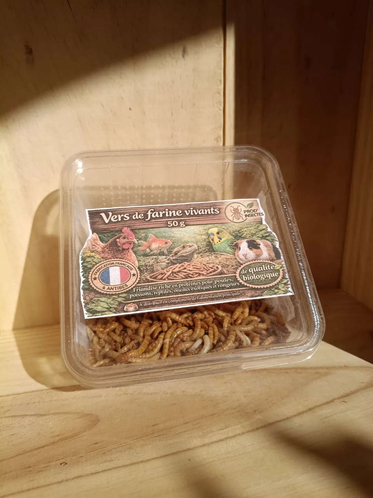
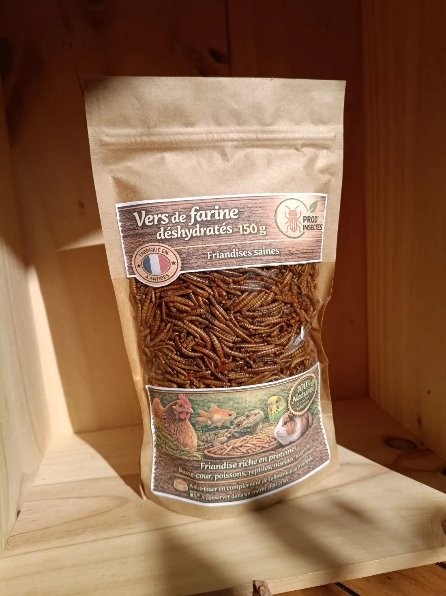
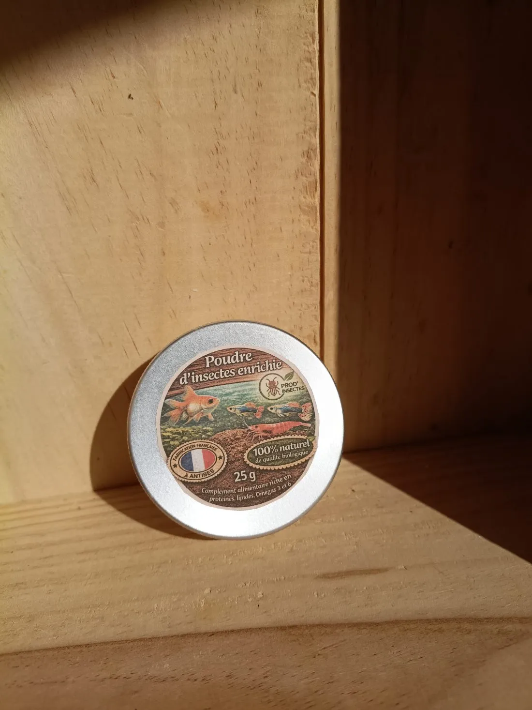
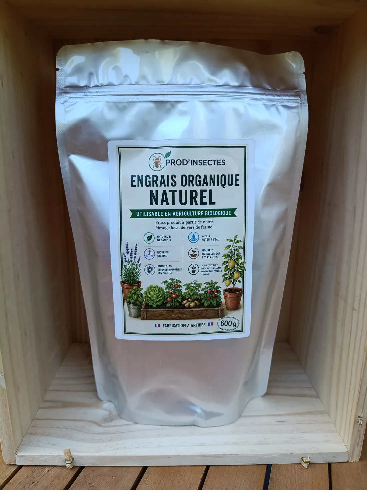

Quatre produits, un seul élevage
Tout vient de nos vers de farine (Tenebrio molitor), élevés en pratiques d'agriculture biologique : 100 % d'origine naturelle, sans colorants ni additifs, nourris exclusivement de végétal. Commande par mail ou SMS, sans minimum d'achat — en livraison ou en retrait.

Vers de farine vivants
Très riches en protéines et lipides, les vers de farine vivants sont le complément alimentaire idéal des reptiles et amphibiens, des oiseaux et des rongeurs — et un coup de pouce pour les hérissons et autres petits habitants de votre jardin.
Alimentation 100 % végétale et biologique. Contient des flocons d'avoine.
Délai actuel : un mois minimum, le temps de reconstituer le stock
Composition principale

Vers de farine déshydratés
La friandise saine, riche en protéines, pour les poules et la basse-cour, les carpes et autres poissons, mais aussi les reptiles, oiseaux et rongeurs. Pratique à conserver et à distribuer en complément de l'alimentation principale — et elle renforce la coquille des œufs.
Peut contenir différents stades de la larve ainsi que des traces de flocons d'avoine.
Délai actuel : un mois minimum, le temps de reconstituer le stock
Composition principale (pour 100 g)

Poudre d'insectes enrichie
Le fortifiant alimentaire idéal de vos poissons et crustacés d'aquarium : un complément riche en protéines, lipides et omégas 3 et 6, hautement digestible.
Contient 20 % de flocons d'avoine.
Délai actuel : un mois minimum, le temps de reconstituer le stock
Composition principale (pour 100 g)

Engrais organique
Un engrais organique et universel, produit à partir de notre élevage de vers de farine. Plantes d'intérieur, potager, plantes de terrasse : il revitalise toutes vos plantes, et tout particulièrement les agrumes. Riche en chitine, il stimule leurs défenses naturelles, les nourrit durablement et aide à retenir l'eau — en dégageant peu d'odeur.
Utilisable en Agriculture Biologique.
En stock — livré en 5 jours ouvrés
Équilibre N · P · K
Mode d'emploi
- En arrosage — une fois par moisDiluez 4 cuillères à soupe dans 1 litre d'eau pour un arrosage enrichi en engrais.
- En surface — trois fois par anSaupoudrez la terre au pied des plantes, pour une diffusion lente et progressive. Généralement en mars, en juillet et en octobre.
Précautions d'emploi : ne pas inhaler ni ingérer. Le produit est assez abrasif : portez des gants pour le manipuler.
Commander par mailLivraison ou retrait
Une commande se passe par mail, par téléphone ou par SMS, sans minimum d'achat. Vous choisissez ensuite : expédition, ou retrait près d'Antibes.
Frais de port
- Moins de 1 kg7 €
- De 1 à 2 kg10 €
- Au-delà de 2 kgSur devis
Expédition en France métropolitaine. Au-delà de 2 kg, les frais dépendent des produits et du poids : on en discute ensemble. Les vers vivants et le sac d'engrais de 10 kg ne sont pas expédiés.
Délais
- Engrais organique5 jours ouvrés
- Vers et poudre d'insectes1 mois minimum
L'engrais est en stock. Pour les insectes, le stock est en cours de reconstitution : comptez au moins un mois en ce moment.
Retrait sur rendez-vous
Envoyez un mail ou un SMS pour convenir d'un jour et d'une heure — et même d'un lieu : nous pouvons aussi nous déplacer dans les environs d'Antibes.
Bientôt — farine d'insectes
La farine de vers de farine verra le jour dès que l'élevage dégagera un surplus de larves. Intéressé·e ? Dites-le-nous, vous serez prévenu·e en premier.
Professionnels : tarifs et volumes
Éleveur, maraîcher, pépiniériste, horticulteur, animalerie, magasin bio ou coopérative : contactez-nous pour un tarif adapté à vos volumes.